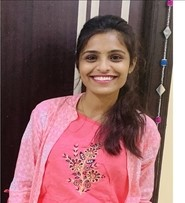

|  |
Alekya Satyanarayana
Full Stack Software Developer
|
| College | Degree | Year |
| Joginpally BR Engineering College | Bachelors of Techology(CSE) | 2017 |
| Sri Chaithanya Jr. College | Intermediate(MPC) | 2013 |
| Sri Vijaya Bharathi High School | SSC | 2011 |
Technologies: Java 8, Spring Boot, Spring Data JPA, Mapstruct, Angular, HTML5, CSS3, Bootstrap 4, PrimeNG, OAuth, Microsoft SQL Server, Gradle, JBoss Server, log4j, SVN, Red Hat Developer Studio
Description: Yard Campaign is a defect tracking application for the Subaru automobile company.
Technologies: Core Java, Spring, Angular, JPA, HTML, CSS, AJAX, MySQL
Description: The main purpose of the project is to provide a platform between job seeker and recruiter through which they can find a way to interact with each other according to their requirements.
Roles and Responsibilities:
Technologies: : Java/JSE, Spring 3.0, Hibernate3.0, JSP, HTML, JavaScript, JQuery, AJAX, Angular JS, JSON , Apache Camel, Active MQ, FUSE ESB, Mysql, PostgreSQL, Tomcat7, Maven, Log4j, SVN, Eclipse.
Description: V-Optimer ™ is the Next Generation Revenue Assurance solution covering every telecoms revenue stream ranging from traditional revenue streams in wireless to enterprise services, television and retail broadband and next generation offerings. V-Optimer ™ is an integrated Revenue Assurance product with Fraud Management System that can be used to pro actively detect and prevent revenue leakages that occur at various touch points in the collection systems. It is an end-to-end revenue assurance system across entire enterprise Voice, Data, Carrier and Interconnect systems that enables to assure integrity of revenue streams, identify revenue & cost leakage and strengthen operational control & governance.
Roles and Responsibilities:
| Email: | alekya1707@gmail.com |
| LinkedIn: | Alekya Ragipally |